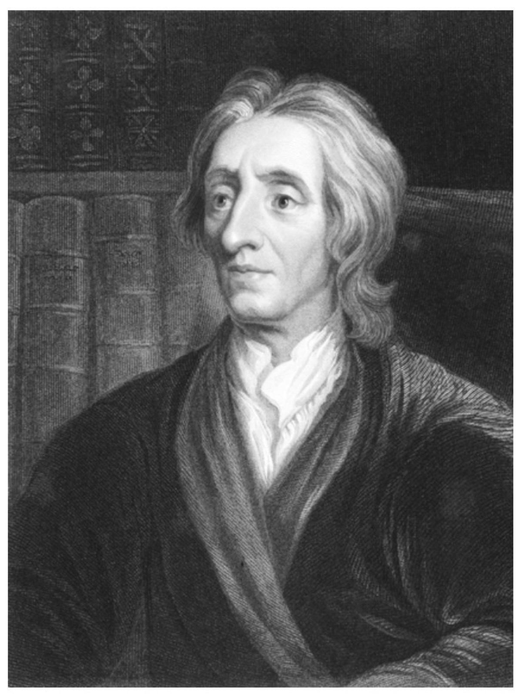
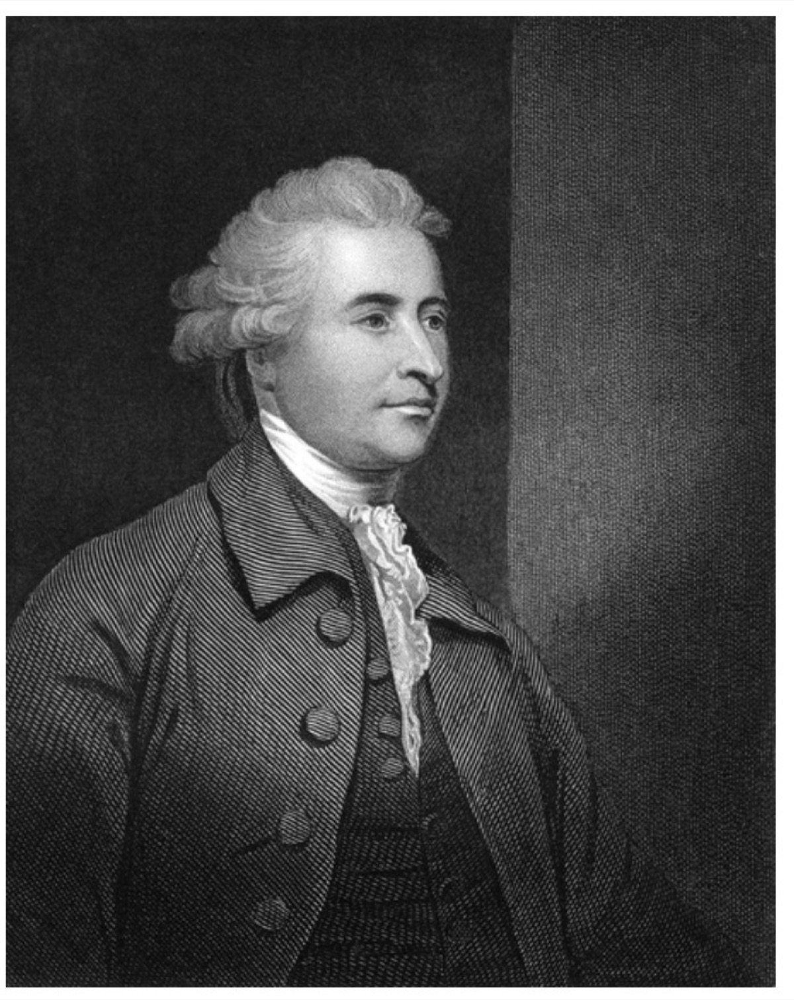
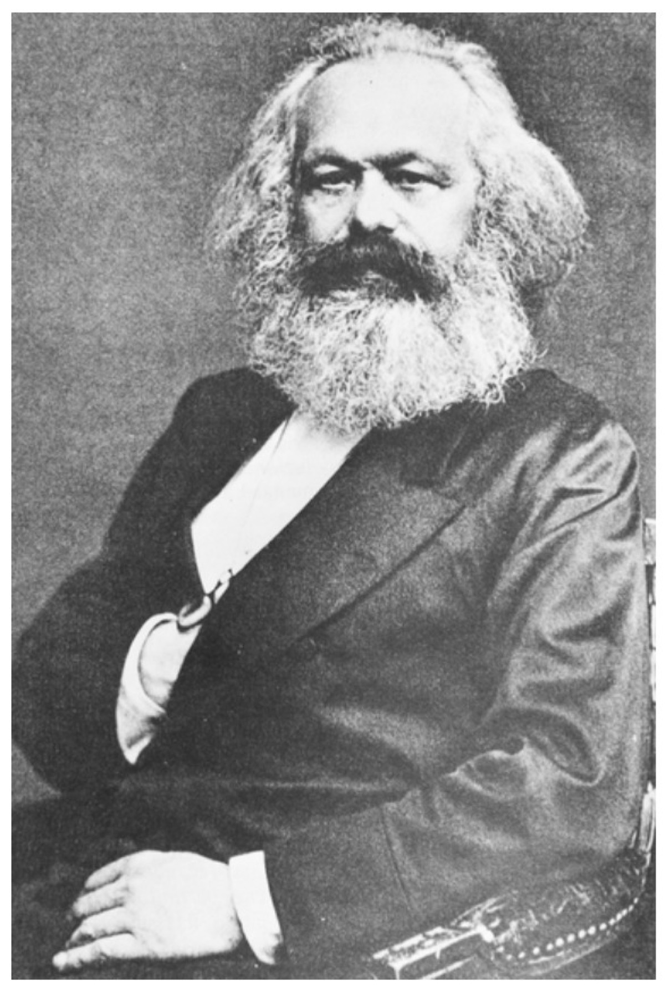
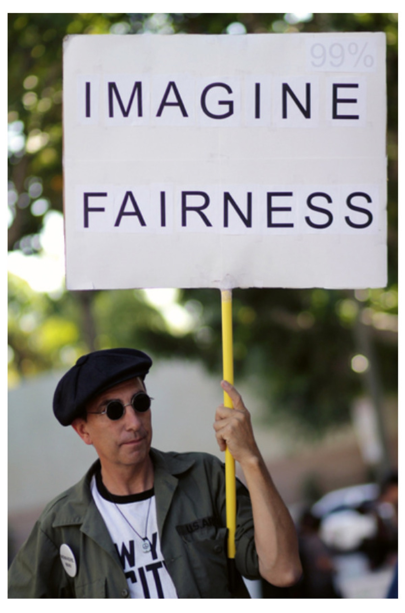

John Locke (1632-1704)
- Naturzustand: Freiheit und Gleichheit im Rahmen des Naturrechts.
- Naturrechte: Leben, Freiheit, Eigentum.
- Staat durch Gesellschaftsvertrag zum Schutz des Eigentums.
- Legislative an das Gemeinwohl gebunden.
AFB I fragt Wissen ab, AFB II verlangt Erklären und Anwenden, AFB III verlangt ein begründetes Urteil.
Schulbuch Kapitel 3.1 · Material M2 und M3. Die Aufgaben werden mit den Buchtexten erarbeitet, nicht auswendig beantwortet.
M2 "Welche politischen Theorien lassen sich historisch unterscheiden?" (S. 201–203): drei Quellentexte und drei Steckbriefe zu Edmund Burke, John Locke und Karl Marx, dazu die Definitionsboxen zu Konservativismus, Liberalismus und Sozialismus (WISSEN KOMPAKT, S. 207). M3 "Wie haben sich die prägenden politischen Theorien weiterentwickelt?" (S. 204–206): zwei aktuelle Zeitungstexte zu modernem Konservativismus (Nefzger, FAZ 2024) und modernem Liberalismus (Fücks, Zeit 2022) sowie zwei INFO-Kästen zur Verwechslungsgefahr.
Freiheit vor Staat vs. Freiheit durch Staat. Notiere in Eigenarbeit deine Position mit einem Satz Begründung, dann Ueberleitung zu den historischen Quellen in M2 (S. 201-203).
EigenarbeitaktivierendErschliesse selbstständig die drei Quellentexte zu Burke, Locke und Marx (M2, S. 201-203). Pflicht je Text: Schlüsselaussagen markieren, Fachbegriff zuordnen, Menschenbild und Staatsverständnis notieren. Aufgaben zu M2.
EigenarbeitAFB I-IIOrdne jeden Theoretiker selbst seiner Strömung zu und vergleiche sie schriftlich. Historische Einordnung und Vergleich, Aufgaben 1b und 1c.
EigenarbeitSicherungWie sehen Konservativismus und Liberalismus heute aus? Begriffsschärfung und Urteil in Eigenarbeit (M3, S. 204-206).
EigenarbeitAFB III


Bevor du die Wissens-Checks bearbeitest: Lies zuerst die drei Quellentexte und Steckbriefe in M2 (S. 201-203) sowie die Definitionsboxen zu Konservativismus, Liberalismus und Sozialismus (WISSEN KOMPAKT, S. 207). Nutze auch die drei Steckbriefe oben. Erst mit diesen Informationen kannst du die folgenden Aufgaben beantworten - sie prüfen dein Verständnis, nicht dein Vorwissen.
Ordne jeden Denker seiner Strömung zu: links einen Namen antippen, dann rechts die passende Strömung.
Denker
Strömung
Von wem stammt der Gedanke: "Der Staat ist nur ein Ausschuss, der die Geschäfte der herrschenden Klasse verwaltet"?
Arbeite aus Burkes Text (M2 Nr. 1) drei Schlüsselaussagen heraus und ordne ihnen je einen Fachbegriff zu. Achte auf die Bilder von Erblichkeit, dem Familien-Erbstück und der britischen Eiche. Wofür stehen sie?
Erwartbar: (1) Erblichkeit und Vererbung von Rechten sichern Stabilität - Begriff: Tradition/Kontinuität. (2) Der Staat gleicht einem gewachsenen Familien-Establishment, nicht einer am Reissbrett geplanten Ordnung - Begriff: organischer Wandel. (3) Das Bild der britischen Eiche, unter der man in Frieden lebt, steht gegen den Lärm der Neuerer - Begriff: Bewahrung/Skepsis gegen Revolution. Kern: Konservativismus.
Erschliesse aus Lockes Text (M2 Nr. 2): In welchem Zustand befinden sich die Menschen von Natur, und warum schliessen sie sich trotzdem zu einem Staatswesen zusammen? Nutze die Begriffe Naturzustand, Naturrecht, Eigentum, Gesellschaftsvertrag.
Erwartbar: Im Naturzustand herrscht völlige Freiheit und Gleichheit innerhalb der Grenzen des Naturrechts; jeder verfügt frei über Person und Besitz. Weil dieser Zustand unsicher ist (kein unparteiischer Richter), vereinigen sich die Menschen durch einen Gesellschaftsvertrag zu einem Staatswesen. Der grosse und wichtigste Zweck ist die Erhaltung des Eigentums, das Locke als Leben, Freiheit und Vermögen fasst. Die Regierung ist an Gesetze gebunden. Kern: Liberalismus.
Fasse aus Marx' Text (M2 Nr. 3) zusammen, wie er Geschichte und Gesellschaft erklärt und welche Rolle Staat und Eigentum dabei spielen. Nutze: Klassenkampf, Bourgeoisie, Proletariat, Produktionsverhältnisse.
Erwartbar: Die Geschichte aller bisherigen Gesellschaft ist die Geschichte von Klassenkämpfen. Die moderne Gesellschaft spaltet sich in zwei feindliche Lager: Bourgeoisie und Proletariat. Die Staatsgewalt ist nur ein Ausschuss, der die gemeinschaftlichen Geschäfte der Bourgeoisie verwaltet, also Ausdruck der herrschenden Klasse. Ziel ist die revolutionäre Ueberwindung der Klassengesellschaft, an deren Stelle eine Assoziation freier Entwicklung tritt. Kern: Sozialismus/Kommunismus.
Erkläre für einen der drei Theoretiker, wie seine Ideen historisch und politisch einzuordnen sind. Frage: Auf welches Problem seiner Zeit antwortet er, und welcher politischen Strömung wird er zugerechnet?
Vier Schritte: (1) historisches Problem (Locke: Absolutismus; Burke: Französische Revolution; Marx: Industrialisierung und soziale Frage). (2) Kernidee. (3) Menschenbild und Staatsverständnis. (4) Strömung benennen (Liberalismus, Konservativismus, Sozialismus). Belege jeden Schritt mit einer Textstelle.
Diskutiere Gemeinsamkeiten und Unterschiede der drei Theorien mit Blick auf die Frage: Wie deuten sie die soziale Ordnung und das Verhältnis von Individuum und Staat? Mindestens zwei Gemeinsamkeiten und zwei klare Unterschiede, mit Begründung.
Gemeinsamkeiten: Alle drei denken über das Verhältnis von Individuum, Eigentum und Herrschaft nach; alle reagieren auf gesellschaftliche Umbrüche. Unterschiede: Locke will das Individuum durch begrenzte Regierung schützen; Burke betont die gewachsene Gemeinschaft und misstraut abstrakten Rechten; Marx sieht im Privateigentum die Ursache von Ausbeutung und will die Ordnung revolutionär ändern. Zentraler Konflikt: Eigentum als zu schützendes Naturrecht (Locke) vs. Eigentum als Machtproblem (Marx), mit Burke als Verteidiger der bestehenden Ordnung.
Arbeite aus dem Text zum modernen Konservativismus (M3 Nr. 1, Nefzger) heraus, welche Herausforderungen der Autor sieht und wie ein zeitgemäßer Konservativismus aussehen soll. Beziehe dich auf konkrete Beispiele im Text, etwa Zeitgeist, Mass, Bürgergeld, Merz und CDU-Grundsatzprogramm.
Erwartbar: Problem ist die irre Geschwindigkeit des Wandels und ein Konservativismus, der das Mass verloren hat und ewiggestrig wirkt. Zeitgemäß wäre ein Konservativismus, der sich aus sich selbst heraus definiert statt in Abgrenzung, der ohne Kulturkampf auskommt und die Notwendigkeit eines starken Sozialstaats anerkennt (Beispiel: Merz kritisiert das Bürgergeld, bestreitet aber nicht den Sozialstaat). Kern: Bewahren mit Augenmass statt Blockade.

Erkläre anhand des Textes zum modernen Liberalismus (M3 Nr. 2, Fücks) den Unterschied zwischen "Freiheit von" und "Freiheit zu" und warum der Autor eine Erneuerung des Liberalismus fordert.
Erwartbar: "Freiheit von" meint die Abwehr staatlicher Uebergriffe, den historischen Kern der liberalen Tradition gegen den absolutistischen Staat. "Freiheit zu" meint die ermöglichende Freiheit, die materielle und soziale Voraussetzungen braucht. Fücks fordert Erneuerung, weil der Liberalismus in die Defensive geraten ist und oft nur als Marktradikalismus wahrgenommen wird; er muss eigene Antworten auf Klima, Digitalisierung und Migration finden, statt nur Bestehendes zu verteidigen.
Kläre mit den INFO-Kästen in M3 zwei Verwechslungen: (a) Konservatismus vs. Konservativismus und (b) Liberalismus vs. Libertarismus. Erkläre jeweils den Unterschied in einem Satz.
(a) Konservatismus ist die allgemeine, zeitlose Haltung, Bestehendes zu bewahren und Veränderungen skeptisch zu sehen; Konservativismus meint die konkrete politische Ideologie seit dem 19. Jahrhundert (Autorität, Privateigentum, Tradition). (b) Liberalismus betont individuelle Freiheit bei akzeptiertem staatlichem Rahmen; Libertarismus (US-"libertarian") ist radikaler und denkt teils bis zur Privatisierung von Polizei oder Strassen.
Beurteile auf Basis von M3, ob die Begriffe Liberalismus und Konservativismus eine Zukunft haben sollten. Begründe mit Argumenten aus beiden Texten und komme zu einem klaren Urteil.
Ein gutes Urteil wiegt ab: Dafür spricht, dass beide Traditionen zentrale Fragen ordnen (Freiheit, Bewahrung) und erneuerungsfähig sind. Dagegen spricht, dass die Begriffe abgenutzt oder missverstanden sind (Marktradikalismus, Ewiggestrigkeit). Ein begründetes Sachurteil nennt ein Kriterium (z. B. Orientierungsleistung für Debatten) und entscheidet damit, statt nur Meinung zu behaupten.
Erläutere, welcher gesellschaftlichen Strömung du dich persönlich zugehörig fühlst, und schlage bei Bedarf einen neuen Oberbegriff für eine aktuelle Strömung vor.
Starke Antworten begründen die Selbsteinordnung mit einem konkreten Wert (z. B. Freiheit, soziale Sicherheit, Bewahrung, Beteiligung) und prüfen selbstkritisch, wo die klassischen Begriffe nicht mehr passen. Ein neuer Oberbegriff sollte ein reales heutiges Spannungsfeld benennen, etwa ökologisch, digital oder generationengerecht.